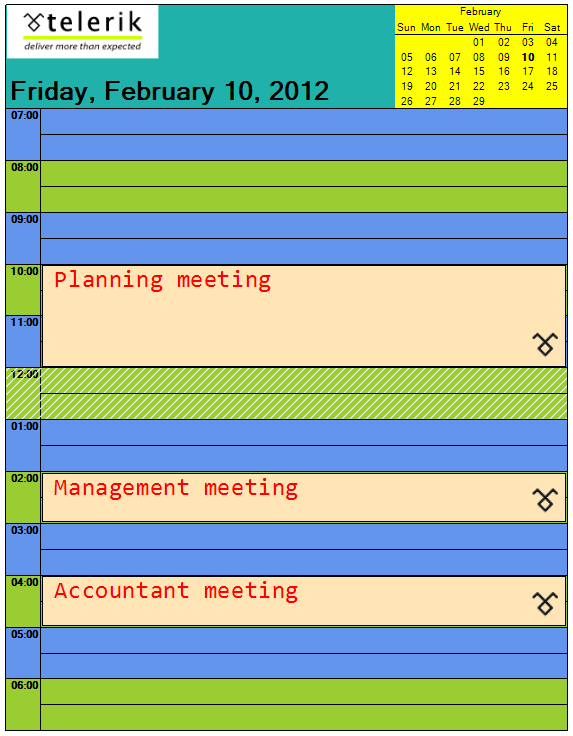

Events and Customization
Required introduction
RadScheduler provides a set of events that allow you to customize the appearance of the printed elements:
FormattingEvents
PrintElementFormatting - Fires when a print element is being formatted before it is printed.
CellPrintElementFormatting - Fires when a cell print element is being formatted before it is printed.
AppointmentPrintElementFormatting - Fires when an appointment print element is being formatted before it is printed.
PaintEvents
PrintElementPaint - Fires when a print element is printed.
CellPrintElementPaint - Fires when a cell print element is printed.
AppointmentPrintElementPaint - Fires when an appointment print element is printed.
Here is an example. The comments are inline:

[C#]
void radScheduler1_CellPrintElementPaint(object sender, PrintSchedulerCellPaintEventArgs e)
{
//draw a hatch in the cell if it is 12 o'clock (lunch break)
if (e.CellElement.Date.Hour == 12)
{
Brush b = new HatchBrush(HatchStyle.BackwardDiagonal, Color.White, Color.Transparent);
e.Graphics.FillRectangle(b, e.Bounds);
}
}
void radScheduler1_AppointmentPrintElementPaint(object sender, PrintAppointmentPaintEventArgs e)
{
//draw an image in the bottom right corner of each appointment
Image img = Resources.telerikLogo1;
int imgWidth = (int)((double)img.Size.Width * 100 / (double)Graphics.FromImage(img).DpiX);
int imgheight = (int)((double)img.Size.Height * 100 / (double)Graphics.FromImage(img).DpiX);
e.Graphics.DrawImage(img, new Point(e.Bounds.Right - imgWidth, e.Bounds.Bottom - imgheight));
}
void radScheduler1_PrintElementPaint(object sender, PrintElementPaintEventArgs e)
{
if (!(e.PrintElement is CalendarPrintElement))
{
//draw an image in the main element
e.Graphics.DrawImage(Resources.telerikLogo, new Point(e.Bounds.X +1, e.Bounds.Y));
}
}
void radScheduler1_PrintElementFormatting(object sender, PrintElementEventArgs e)
{
//allow paint of the main element
e.PrintElement.DrawFill = true;
//set the calendar backcolor
if (e.PrintElement is CalendarPrintElement)
{
e.PrintElement.BackColor = Color.Yellow;
}
else
{
//set the main element backcolor and change its text position
e.PrintElement.BackColor = Color.LightSeaGreen;
e.PrintElement.TextAlignment = ContentAlignment.BottomLeft;
}
}
Font appointmentFont = new Font("Consolas", 20);
void radScheduler1_AppointmentPrintElementFormatting(object sender, PrintAppointmentEventArgs e)
{
//customize the appointment appearance
e.AppointmentElement.DrawFill = true;
e.AppointmentElement.BackColor = Color.Moccasin;
e.AppointmentElement.ForeColor = Color.Red;
e.AppointmentElement.Font = appointmentFont;
}
void radScheduler1_CellPrintElementFormatting(object sender, Telerik.WinControls.UI.PrintSchedulerCellEventArgs e)
{
//set different colors for cells with even and odd hours
e.CellElement.DrawFill = true;
if (e.CellElement.Date.Hour % 2 == 0)
{
e.CellElement.BackColor = Color.YellowGreen;
}
else
{
e.CellElement.BackColor = Color.CornflowerBlue;
}
}
[VB.NET]
Private Sub radScheduler1_CellPrintElementPaint(sender As Object, e As PrintSchedulerCellPaintEventArgs)
'draw a hatch in the cell if it is 12 o'clock (lunch break)
If e.CellElement.[Date].Hour = 12 Then
Dim b As Brush = New HatchBrush(HatchStyle.BackwardDiagonal, Color.White, Color.Transparent)
e.Graphics.FillRectangle(b, e.Bounds)
End If
End Sub
Private Sub radScheduler1_AppointmentPrintElementPaint(sender As Object, e As PrintAppointmentPaintEventArgs)
'draw an image in the bottom right corner of each appointment
Dim img As Image = My.Resources.telerikLogo1
Dim imgWidth As Integer = CInt(CDbl(img.Size.Width) * 100 / CDbl(Graphics.FromImage(img).DpiX))
Dim imgheight As Integer = CInt(CDbl(img.Size.Height) * 100 / CDbl(Graphics.FromImage(img).DpiX))
e.Graphics.DrawImage(img, New Point(e.Bounds.Right - imgWidth, e.Bounds.Bottom - imgheight))
End Sub
Private Sub radScheduler1_PrintElementPaint(sender As Object, e As PrintElementPaintEventArgs)
If Not (TypeOf e.PrintElement Is CalendarPrintElement) Then
'draw an image in the main element
e.Graphics.DrawImage(My.Resources.telerikLogo, New Point(e.Bounds.X + 1, e.Bounds.Y))
End If
End Sub
Private Sub radScheduler1_PrintElementFormatting(sender As Object, e As PrintElementEventArgs)
'allow paint of the main element
e.PrintElement.DrawFill = True
'set the calendar backcolor
If TypeOf e.PrintElement Is CalendarPrintElement Then
e.PrintElement.BackColor = Color.Yellow
Else
'et the main element backcolor and change its text position
e.PrintElement.BackColor = Color.LightSeaGreen
e.PrintElement.TextAlignment = ContentAlignment.BottomLeft
End If
End Sub
Private appointmentFont As New Font("Consolas", 20)
Private Sub radScheduler1_AppointmentPrintElementFormatting(sender As Object, e As PrintAppointmentEventArgs)
'customize the appointment appearance
e.AppointmentElement.DrawFill = True
e.AppointmentElement.BackColor = Color.Moccasin
e.AppointmentElement.ForeColor = Color.Red
e.AppointmentElement.Font = appointmentFont
End Sub
Private Sub radScheduler1_CellPrintElementFormatting(sender As Object, e As Telerik.WinControls.UI.PrintSchedulerCellEventArgs)
'set different colors for cells with even and odd hours
e.CellElement.DrawFill = True
If e.CellElement.[Date].Hour Mod 2 = 0 Then
e.CellElement.BackColor = Color.YellowGreen
Else
e.CellElement.BackColor = Color.CornflowerBlue
End If
End Sub